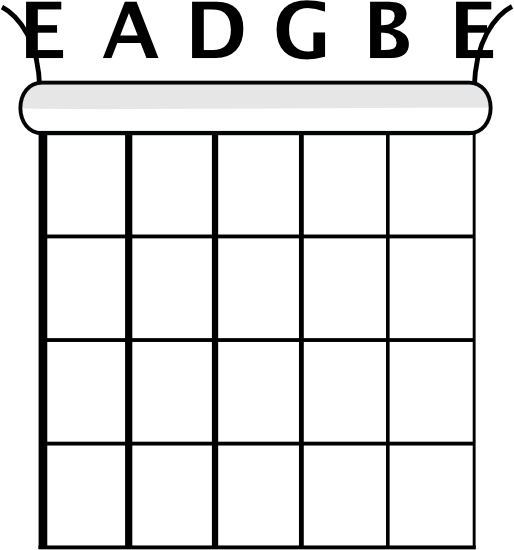
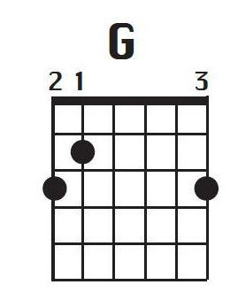
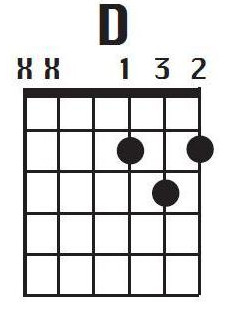
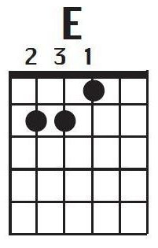
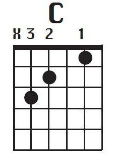
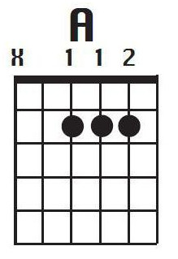
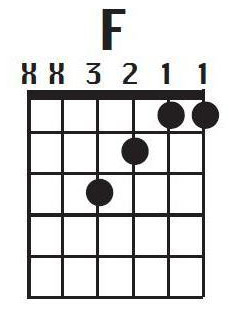
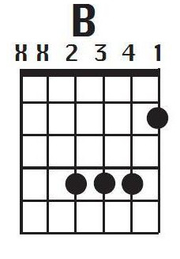

This website will talk you through the basics of learning to play the guitar.
Learning to play a guitar is a great skill as it allows your to express your self in a musical form.
First we will talk about how to correctly hold the guitar, then we will look at simple basic guitar chords and
how to position the fingers, in detail. Finally, we will practice with strumming patterns.
This journey will require plenty of practice and determination before being able to reap the awards from your efforts,
however it is a skill that can benefit you greatly!
Let's get started
First grab a guitar, if you need help buying a guitar
check out our Guitar recommendations page,
once you have a guitar in your possesion, start using your dominant
hand to strum the guitar with your thumb or guitar pick, whichever you prefer, and begin strumming in a pattern
of 1-2-3-4 and repeat all down strokes, then continue to strum down until you feel
comfortable strumming in patterns of 4 and if it sounds good, it is good.
Hand Positioning
Comfortably position your other hand around the neck of the guitar and place your thumb
behind the neck perpendicularly. Now practice holding down different strings with
your free fingers. The strings are labeled as E, B, G, D, A, E. We will also label your finger as 1,2,3,4
starting fromn the index finger as 1 and etc. and the fretboarded will be labeled as 1,2,3,4,5,6,7,8...
starting from the very top.

Basic Chords
G Chord

The first chord we will cover will be the 'G' Chord.
Put your first finger on the 'B' string in the second fret,
put your second finger on string 'E'(thick) on the third fret,
finally put your third finger on the 'E'(thin) string on the
third fret. Refer to the diagram above. Using the 1-2-3-4
strumming pattern we covered earlier, play the G chord with
down strokes in the 1-2-3-4 pattern until you feel a bit more
comfortable.
D Chord
Marry You
To play the 'D' chord is played by putting your first finger on the 'G' sting of the second fret, then you place your second finger on the 'E'(thin)
of the second fret, then finally place your third finger on the 'B' string of the third fret, holding that position stumb the 1-2-3-4 downstrokes stumming pattarn
we covered earlier, repeat this until it becomes natural.
Em Chord
To play 'Em'(E minor) you will have to place your second finger on 'D' sting on the second fret and also your third finger on 'D' string
on the second fret, holding that position strum the 1-2-3-4 downstrokes strumming pattern
that we covered earlier, and repeat this until satisfied.
Let's Practice
Let's begin by trying a few simple tunes using chords we've just learned. I recommend starting with a simple
song called Marry You from Bruno Mars or
you could also do Lips Are Moving by Meghan Trainor.
E Chord

To play the 'E' chord you must first place your first finger on the 'G' string on the first fret, and the second finger on the 'A' string on
the second fret, and the third finger on the 'D' also on the second fret, holding that position strum the 1-2-3-4 downstrokes strumming pattern
we covered earlier, and continue until it becomes sufficient.
C Chord

To play 'C' you will have to place your first finger on the 'B' string on the first fret, and place the second finger on the 'D' string on the
second fret. Lastly place your third finger on the 'A' sting on the third fret, as said before, holding that position strum the 1-2-3-4 downstrokes strumming pattern
we covered earlier. Repeat this until it becomes comfortable.
A Chord

To play the 'A' Chord you must place your first finger on the 'D' string on the second fret. Next, place your second finger on the 'G' string also on the second fret,
finally place your third finger on the 'B' string and again on the second fret, holding that position strum the 1-2-3-4 downstrokes strumming pattern
we covered earlier and rerun until adequate.
F Chord

In order to learn to play the 'F' chord you must have the previous chords well practised as it's slightly more challenging on
the fingers. First you must hold down the 'B' and 'E'(thin) with your first finger (yes both of them!). Next, place your second
finger on the 'G' string and your third on the 'D' string. Now strum to your hearts content, and of course, continuing to use the 1-2-3-4 downstrokes strumming pattern
we covered earlier. Rehearse until you've reached a satisfactory standard.
B Chord

To play this chord you must first place your first finger on 'E'(thin) in the second fret. Next, place your second finger on the 'D' string in the fourth fret
and put the third finger on the 'G' string on the fourth fret. Again, put your fourth finger on the 'B' string on the fourth fret, and while holding that position, strum the 1-2-3-4 downstrokes strumming pattern
we covered earlier. Repeat this until it becomes more comfortable.
Strumming Patterns
Finally after you have gone over all the basic chords that iv just introduced to you, we can get started learning new strumming patterns.
Strumming Pattern #1: We will stick with downstrokes like before for this one two, the pattern is, '1 & 2 & 3 & 4', tap you foot along with the numbers
and clearly say 'and' in between every number, and at every number make a downstrokes, continue this until it feels comfortable. Now i will make it a bit more tricky,
every time you say 'and' make a upstroke and add another 'and' at the end of the pattern after the '4', so it will be like '1 & 2 & 3 & 4 & '. Rehearse this until
it feel natural.
Strumming Pattern #2: This one will be a simular pattern as the last one, '1 & 2 & 3 & 4 & ' but it will be played a small bit more difficult.
First make a downstroke for all the number except number '3', and then do an upstroke for all the 'ands( & )'. This pattern sounds easy
but is actually tricky to get into, play this until you have it mastered.